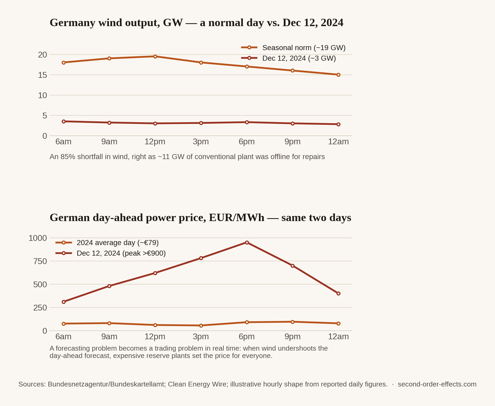

The Clouds I Used to Watch Are Now Somebody's Dataset
A slight deviation from this site's usual subject. Not a war or a rate hike this time, just the strange fact that the weather I used to watch as a child for no reason at all is now the input to a forecasting model that decides how a power grid prices electricity an hour from now.
Every other article on this site starts with an event: an invasion, a rate decision, a missile. This one starts with something I did as a kid for no particular reason, which was watch clouds move. Not for weather prediction, not for a school project, just the ordinary thing children do when they're bored and lying on grass. It never occurred to me that the same patterns I was watching idly would, twenty years later, be the exact thing a machine learning model is trained on to decide how much a unit of electricity should cost in an hour's time. That gap, between something I did for free out of boredom and something that is now a genuinely valuable dataset, is what this piece is actually about.
What happens when the forecast is wrong
On December 12, 2024, Germany had what's known in the industry as a Dunkelflaute, a stretch of low wind and low sun that leaves a grid built increasingly around renewables with very little to actually generate from. Wind output that day averaged just 3.1 gigawatts against a seasonal norm of roughly 19.2 gigawatts, a shortfall of around 85%, and it happened while roughly 11 gigawatts of conventional backup capacity was simultaneously offline for maintenance. German day-ahead electricity prices, which had averaged around €79 per megawatt-hour across 2024, spiked past €900, briefly touching close to €1,000 intraday. A steel plant in Saxony halted production rather than pay it. Regulators later confirmed there was no manipulation involved. It was simply a forecasting and scarcity problem, compounding in real time.

The part that actually amazed me: the forecasting itself
What pulled me into this topic wasn't the price spike, it was what grid operators and trading desks do to avoid one. Back in 2019, Google's DeepMind published a project applying a neural network, trained on weather forecasts and historical turbine data, across 700 megawatts of wind capacity in the central United States. The model predicted output 36 hours ahead and used that prediction to commit to hourly delivery targets in advance, and it increased the value of that wind energy by roughly 20%, simply by making the output more predictable and therefore more sellable at a good price rather than dumped at whatever the spot market offered. Separately, and closer to the childhood image that started this whole piece, utilities and trading desks now run "nowcasting" systems that read geostationary satellite cloud imagery directly, feeding deep learning models that forecast solar output on a zero-to-six-hour horizon, essentially watching the same clouds I used to watch, at a resolution and a speed no child lying on grass ever could.
The mechanism connecting the forecast to the price is genuinely elegant, once you see it. Electricity markets clear a day ahead based on a forecast of what wind and solar will produce. When the real world undershoots that forecast, the grid has to lean on expensive reserve plants to cover the gap, and the price of that reserve power becomes the price for the whole market in that hour, which is exactly what happened in Germany that December. When the real world overshoots the forecast instead, and more sun or wind shows up than the grid can use, prices can go negative, generators effectively paying someone to take electricity off their hands rather than shut a turbine down. Germany logged 573 negative-price hours across 2025, up 25% from the year before. Both directions, the spike and the negative print, trace back to the same root cause: a forecast that didn't quite match reality, at a scale where even a small miss moves real money.
A cloud pattern is either a childhood distraction or a multi-billion-dollar forecasting input, and the only thing that changed between the two is who's watching, and what they're allowed to do with what they see.
Why this one is the deviation, and why it still belongs here
This site is normally about tracing a first-order shock to its quieter second-order landing spot: a war to a fuel bill, a rate hike to a remittance receipt. This article runs a little differently, because there's no single shock at the start of it, just a slow accumulation of better sensors, better models, and more renewable capacity on the grid, each making the other more valuable. What I find genuinely moving about it, more than any other topic I've covered here, is that the connection between something as unserious as childhood cloud-watching and something as serious as how a grid prices power isn't a metaphor I'm reaching for. It's a literal, mechanical link: the same physical patterns, read by a much better instrument, doing real economic work now. Most of what I write about on this site is a lesson in how far a shock can travel before it lands on someone's monthly budget. This one is the rare case where the thing travelling is curiosity instead, and it still ends up in the same place: a number on a bill, decided by something most people never think to look up at.
Sources
- Bundesnetzagentur / Bundeskartellamt — joint study of electricity price peaks during 2024 Dunkelflaute periods
- Clean Energy Wire — short-term power price spikes during Germany's Dunkelflaute
- Google DeepMind — machine learning and the value of wind energy, 2019
- Bloomberg — Europe's record surge in negative power prices in 2025
- PV Magazine — record solar output in Europe and negative price hours
- Chart hourly shapes are illustrative reconstructions built from the reported daily wind-output and price figures for December 12, 2024; exact intraday data was not independently obtained.
Comments